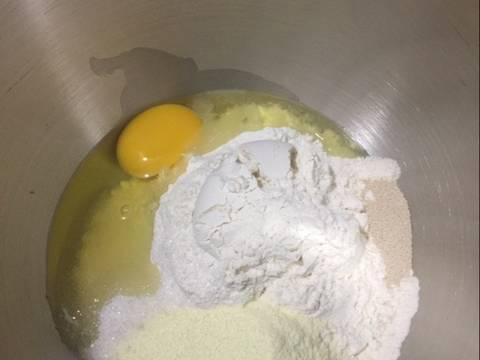
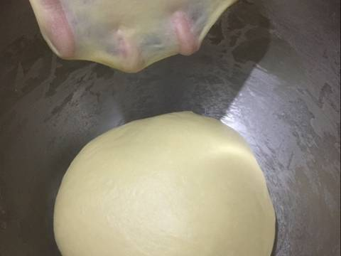
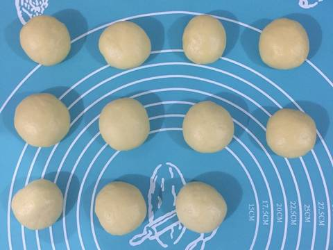
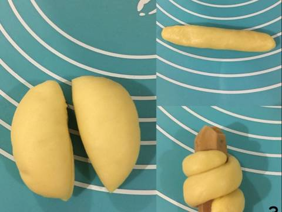
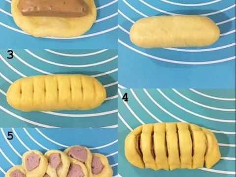

Resep Roti Sosis Unyil
Bahan bahan:
Adonan:
- 3/4 cup cakra kembar (225 gr)
- 1/2 cup air (130 ml)
- 3 sdm gula pasir
- 2 sdm susu bubuk
- 1 butir telur
- 1 sdt ragi instan (5 gr)
- 1/4 sdt bakerine plus (optional)
- 3 sdm margarin/butter (50 gr)
Olesan:
- 1 butir kuning telur
- 1 sdm susu cair
- Butter / margarin secukupnya
Isian:
Langkah-langkah
- Masukkan seluruh bahan ke dalam wadah (kecuali margarin),mixer hingga setengah kalis.

- Masukkan margarin, mixer hingga kalis.

- Timbang, bagi dan bulatkan adonan, tutup dengan cling wrap/serbet lembap, diamkan ditempat hangat selama 20 menit

- Bagi bulatan adonan menjadi 2, pulung-pulung dan lilit adonan ke sosis

- Cara kedua: gulung sosis ke dalam adonan, gunting beraturan tapi jangan sampai putus
